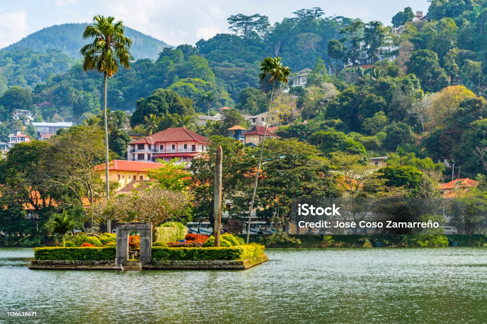

Kandy, Sri Lanka
Kandy is a large city in central Sri Lanka. It's set on a plateau surrounded by mountains, which are home to tea plantations and biodiverse rainforest. The city's heart is scenic Kandy Lake (Bogambara Lake), which is popular for strolling. Kandy is famed for sacred Buddhist sites, including the Temple of the Tooth (Sri Dalada Maligawa) shrine, celebrated with the grand Esala Perahera annual procession. It is a UNESCO World Heritage Site.
Image of Kandy

Learn More About Kandy
Visit the Official Sri Lanka Tourism Website
View Kandy on Google Maps
Attractions in Kandy
- Temple of the Tooth Relic (Sri Dalada Maligawa)
- Kandy Lake
- Royal Botanical Gardens, Peradeniya
- Bahiravokanda Vihara Buddha Statue
- Udawatta Kele Sanctuary
Travel Tips for Kandy
- Plan your visit during the Esala Perahera festival for a unique cultural experience (usually July or August, but check dates).
- Dress modestly when visiting religious sites (cover shoulders and knees).
- Try the local Kandyan cuisine.
- Allow ample time for traffic, especially in the city center.
- Bargain respectfully when shopping at local markets.